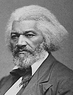

|

|

|
|
|
Slave, freedman, orator, abolitionist, newspaper editor, diplomat, and
civil rights activist; Frederick Douglass is arguably the most famous
African American of the nineteenth century. Douglass escaped from
slavery, became an eloquent champion of liberty and equality, and
eventually served his country as a respected government official.
In 1818, Harriet Bailey gave birth to a son named Frederick Augustus
Washington Bailey. They lived as the property of Aaron Anthony on
Maryland's Eastern Shore. Douglass never knew the identity of his
father, though he speculated that it might have been his master. He had
one older brother and four sisters. Douglass' mother was sold away while
he was still an infant, so his grandmother Betsey Bailey raised him
through 1823. In 1824, he was moved to a plantation on the Wye River,
where he was reunited with several of his siblings. He saw his mother
only four or five times before she died in 1826.
That same year, he relocated to urban Baltimore; the move changed his
life. His master died, and Douglass became the property of Anthony's
son-in-law Thomas Auld, who sent Douglass to live with his brother Hugh
Auld. Hugh's wife Sophia began teaching Douglass to read, until Hugh
discovered the lessons and warned his wife that it was both unlawful and
unsafe to teach slaves to read. Douglass understood this as a turning
point in his life, later observing that education would be his "pathway
from slavery to freedom." Although forbidden to learn to read and write,
the young Douglass spent the next few years educating himself in secret,
even giving poor white boys food in exchange for lessons.
After seven years in Baltimore, Douglass moved again in 1833 to live
in St. Michaels, Maryland, where he returned to work for Thomas Auld.
When Auld found Douglass teaching other slaves to read, he rented him
out to a farmer named Edward Covey, hoping the renowned "slave breaker"
would make Douglass obedient. Covey beat Douglass nearly every day, and
almost succeeded in breaking him. One day, however, Douglass chose to
fight back, beating Covey and regaining his will to live and his desire
for freedom. The fight, he wrote, "rekindled the few expiring embers of
freedom, and revived within me a sense of my own manhood." After Covey
failed to break Douglass, the slave was sent in 1835 to work for William
Freeland, another local farmer. There, the incorrigible Douglass
organized a Sunday school, and, true to his belief that education was
the key to freedom, again taught other slaves to read. In 1836, Douglass
planned his escape, but when the plot was discovered, he was jailed and
then sent back to Baltimore to live with Hugh and Sophia Auld. The Aulds
hired him out to work as a caulker in a shipyard, and over the next two
years, he prepared himself for a second escape attempt.
Having more mobility than he did as a plantation slave, Douglass
joined the East Baltimore Mental Improvement Society in 1837 and met his
future wife Anna Murray. In the fall of 1838, Douglass dressed himself
in a sailor's uniform, borrowed identification papers from a free black
sailor, and escaped to New York where he changed his last name to
Johnson. Less than two weeks after his escape, he and Anna married in
New York and then moved to New Bedford, Massachusetts, where they
changed their last name to Douglass. The years in New Bedford were good
to the Douglass family. Anna and Frederick had four children there:
Rosetta (1839), Lewis Henry (1840), Frederick (1842), and Charles Remond
(1844). The period was also fruitful for Douglass the activist, as he
attended abolitionist meetings, became a licensed preacher for the
African Methodist Episcopal Zion Church, and subscribed to William Lloyd
Garrison's abolitionist weekly The Liberator. In 1841, Douglass
heard Garrison speak at an antislavery meeting, and he was soon invited
to speak about his own experiences with slavery. After delivering one
such speech at the Massachusetts Anti-Slavery Society's annual
convention in Nantucket, the group hired Douglass as a regular speaker.
Subsequently, he and Garrison traveled together and became close allies
in the fight against slavery.
In 1845, Douglass wrote what would become his most significant work,
the Narrative of the Life of Frederick Douglass, an American
Slave. The Narrative was a rousing success, going into nine
printings over the next three years. However, while it marked another
turning point in Douglass's life, it also proved a dangerous gamble.
According to the law, Douglass's master had a right to his property and
could reclaim the former slave whenever he chose to do so. Fearing for
his freedom, Douglass's friends advised a trip abroad, and in August of
1845 Douglass boarded the Cambria for a two-year tour of Ireland
and Great Britain. While he traveled and lectured, English friends and
supporters raised over $700 to purchase Douglass's freedom from the Auld
family. When Douglass returned to the United States in 1847, he was
legally free.
Following his return to the United States, Frederick Douglass and his
family moved to Rochester, New York where he used money raised by
English friends to buy a printing press and publish his own abolitionist
weekly paper. He named it North Star, and its masthead read:
"Right is of no Sex--Truth is of no Color--God is the Father of us all,
and we are all brethren." True to these pronouncements, Douglass spent
the remainder of his pre-Civil War Years tirelessly fighting for both
equality and an end to slavery. In 1848, he attended the women's rights
convention in Seneca Falls, New York; he began working on behalf of the
Underground Railroad; and when one of his daughters had to leave school
because she was black, he began his fight to de-segregate Rochester's
public schools. In 1849, he and Anna had another daughter Annie.
The move to Rochester also proved important for Douglass's
intellectual independence. In 1851 he merged the North Star with
Gerrit Smith's Liberty Party Paper, calling the new weekly
Frederick Douglass's Paper. Not long thereafter, Douglass found
himself at odds with his mentor Garrison. Garrison believed that the
government was too corrupt to bring an end to slavery, and burned a copy
of the Constitution to make his point. Douglass disagreed, arguing that
change could be made within the existing political system. The rift
between Garrison and Douglass mirrored the larger split between
political and radical abolitionists.
The 1850s tested the optimism of Douglass and other black
abolitionists. The political and social roller coaster ride of the
sectional crisis continually forced Douglass and others to keep their
faith in a brighter future as they struggled in the midst of
overwhelming odds. In 1857, when the Supreme Court used the Dred Scott
case to declare that Congress had no right to restrict slavery in the
territories, it also struck a devastating blow to Douglass's efforts for
racial equality in general by declaring that blacks were "beings of an
inferior order" and were not U.S. citizens. Two years later, after a
zealous John Brown engineered a violent abolitionist raid on the federal
arsenal at Harpers Ferry, Douglass had to leave the country following
the discovery of a letter that he wrote to Brown. Although there was no
direct link between the two, Douglass first went to Canada and then on a
lecture tour of England.
He returned safely to Rochester in April of 1860. After the election
of Abraham Lincoln threw the country into civil war, Douglass insisted
that the struggle must end slavery. He spent the war years, then,
pushing Lincoln and other northern whites to boldly proclaim that the
aim of the Civil War was to emancipate the slaves. Cheering the
Emancipation Proclamation in 1863, Douglass pushed the president to
allow black men to fight in the war, and he eventually became a
recruiter for the 54th Massachusetts Infantry, the nation's first
regiment of black soldiers. His sons Lewis and Charles both served in
this regiment. By war's end, with the passage of the Thirteenth
Amendment, Douglass finally realized his dream with the end of slavery.
He spent the remaining years of his life fighting for full black
equality, editing and writing, and serving a number of Republican
administrations, including a stint as the U.S. minister to Haiti from
1889 to 1891. In 1895, shortly after speaking at a meeting of the
National Council of Women in February, Douglass died of heart failure.
Source: Christopher Bates, ed. The Encyclopedia of the Early
Republic and Antebellum America (Armonk, NY: M.E. Sharpe, 2010), 307-309.
|